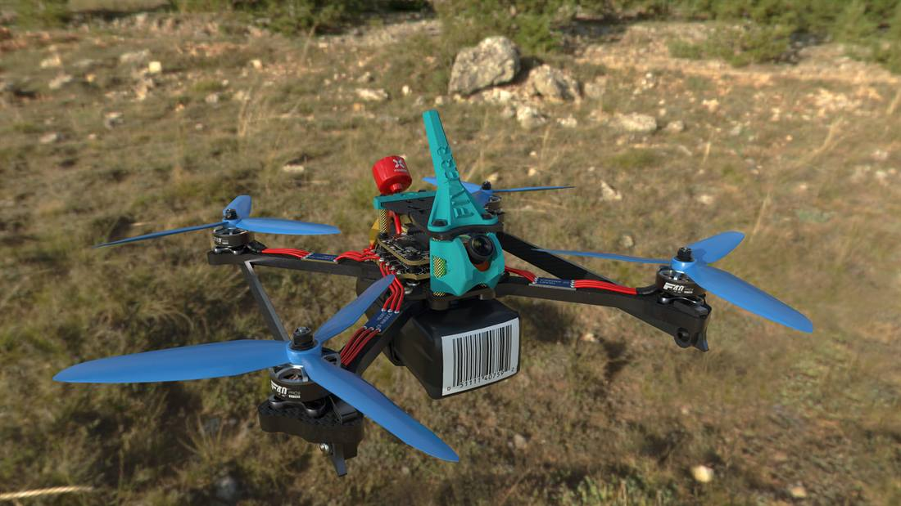
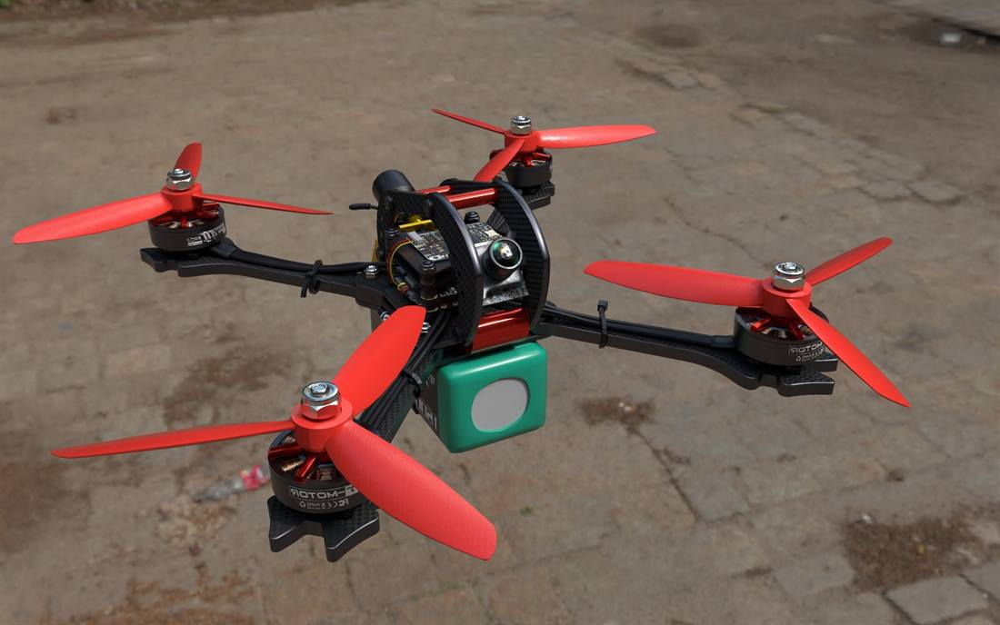

แฟ้มสะสมผลงาน 2569 (Selected Works 2026)
ดนัยวิชญ์
ขันทวงศ์
Senior 3D Modeler | Full-Stack Web Developer | AI & Systems Architect
บทคัดย่อผู้บริหาร (3D, Full-Stack & Systems Architecture)
ซีเนียร์ 3D โมเดลเลอร์และผู้เชี่ยวชาญด้าน Blender สายงาน Hard-Surface 3D Modeling (โครงสร้างสถาปัตยกรรม, เครื่องจักรกล, โดรน FPV, และหุ่นยนต์เครื่องมือแพทย์) โครงข่ายโพลีกอน Quads แม่นยำ ผสานประสบการณ์ระดับลึกในการพัฒนาเว็บแอปพลิเคชัน Full-Stack ระดับโปรดักชัน (React 19, Firebase) และการวางโครงสร้างพื้นฐานระบบไอที/AI สตูดิโอ
ผู้ก่อตั้งคอมมูนิตี้แปลเกมภาษาไทย (ผู้ติดตาม 4.5 พันคน) และผู้กำกับภาพยนตร์สั้น AI เจ้าของรางวัลชนะเลิศสูงสุด Grand Prix ระดับประเทศ ผู้ริเริ่มระบบออโตเมชันสร้างสรรค์สื่อ คลัสเตอร์ประมวลผลความเร็วสูง และการเล่าเรื่องด้วยภาพ
คว้ารางวัลชนะเลิศสูงสุดระดับประเทศ Grand Prix จากเทศกาลภาพยนตร์ AI นานาชาติ จากผลงานภาพยนตร์สั้น AI เรื่อง "The Stroke of Night" (ร่วมสร้างภายใต้ Animation Renaissance) พิสูจน์ขีดความสามารถการผสาน Generative AI เข้ากับการเล่าเรื่องภาพยนตร์ระดับสากล
กระบวนการผลิตสื่อภาพยนตร์สั้นคุณภาพระดับโรงภาพยนตร์ แสดงถึงการกำกับอารมณ์ Mood & Tone การเล่าเรื่องเชิงลึก และการส่งต่อข้อความอันทรงพลังสู่ผู้ชม

คลิกเพื่อรับชมบน YouTube ↗
โปรเจกต์จำลองการทำงานเชิงโต้ตอบสำหรับหุ่นยนต์ผ่าตัด (da Vinci Surgical Systems) รับผิดชอบการปั้นโมเดล 3D ความแม่นยำสูง และการจำลองห้องผ่าตัดเสมือนจริง (Virtual Operating Room) ตามหลักการแพทย์และกายวิภาคศาสตร์
แสดงโครงสร้างและชิ้นส่วนหุ่นยนต์ทางการแพทย์ การทำ PBR Texturing ที่สมจริง การตอบสนองต่อแสง และการปรับแต่งโพลีกอนให้เหมาะสมกับการประมวลผลแบบ Real-Time Engine
คอลเลกชันผลงานการปั้นโมเดล 3D โดรน FPV, โดรนฟรีสไตล์, ไมโครวูป (Whoop) และฝาครอบแคนโนปีตามหลักอากาศพลศาสตร์กว่า 105 โมเดล โครงสร้างโพลีกอน Quads แม่นยำ ผิวคาร์บอนไฟเบอร์เสมือนจริง และรองรับการนำไปใช้ในโปรแกรมจำลองการบินจริง (Flight Simulators)




เว็บแอปพลิเคชันจำลองการทดสอบความรู้และคลังข้อสอบ สำหรับผู้เตรียมสอบคัดเลือกตำแหน่งนักจัดการงานทั่วไป สำนักทะเบียน มหาวิทยาลัยเชียงใหม่
ฟีเจอร์เด่นและสถาปัตยกรรมระบบ:
- ระบบจำลองข้อสอบเชิงโต้ตอบ: คลังข้อสอบสุ่มแบบเต็มรูปแบบกว่า 180+ ข้อ พร้อมระบบจับเวลา คำนวณคะแนน และตรวจคำตอบทันที
- ระบบคอมไพล์เอกสาร PDF อัตโนมัติ: พัฒนาสคริปต์ Python ในการสร้างและจัดเล่มเอกสารคู่มือเตรียมสอบ PDF ที่สมบูรณ์แบบ
- UI ตอบสนองทุกอุปกรณ์: หน้าต่างผู้ใช้งานที่เรียบง่าย ทันสมัย เหมาะกับการอ่านหนังสือสอบทั้งบนมือถือและคอมพิวเตอร์
ผู้ก่อตั้งและผู้วางกลยุทธ์การสื่อสาร สร้างการมีส่วนร่วมกับชุมชนเกมเมอร์ชาวไทยกว่า 4,500+ คน พร้อมแพลตฟอร์มคลังม็อด
nodnuattranslator.vercel.app
ไฮไลท์และผลงานสำคัญ:
- ดูแลช่องทางโซเชียลมีเดีย สื่อสารความคืบหน้าของม็อดแปลภาษาไทยให้ผู้ติดตาม 4,500+ คน
- รับฟังความคิดเห็นและแก้ไขปัญหาทางเทคนิคให้ผู้ใช้งานอย่างรวดเร็วและจริงใจ
- เขียนคู่มือและภาพประกอบการติดตั้งม็อดอย่างละเอียดเข้าใจง่าย
- ริเริ่มการประยุกต์ใช้ AI Translation Workflow ร่วมกับการเรียบเรียงภาษาอย่างประณีตเพื่อเกมเมอร์ชาวไทย

เว็บแอปพลิเคชันบริหารเวลาทำงาน ติดตามโปรเจกต์ และคำนวณรายได้สำหรับฟรีแลนซ์และสตูดิโอ ทำงานบนระบบคลาวด์แบบเรียลไทม์
ฟีเจอร์เด่นด้านสถาปัตยกรรมซอฟต์แวร์:
- Frontend Stack: พัฒนาด้วย React 19, Vite, Lucide Icons พร้อมดีไซน์ Glassmorphism ที่สวยงาม
- กราฟวิเคราะห์การเงิน: แดชบอร์ดสรุปรายได้และชั่วโมงการทำงานรายเดือนด้วย Recharts
- ระบบสร้างใบแจ้งหนี้ (Invoice Engine): กำหนดข้อมูลผู้ว่าจ้าง บันทึกเลขเอกสาร และสั่งพิมพ์เป็น PDF ได้ทันที
- Cloud Persistence: ซิงค์ข้อมูลข้ามอุปกรณ์และสำรองข้อมูลอัตโนมัติด้วย Firebase Firestore
- การจัดการโปรเจกต์: รองรับการสร้าง Sub-projects และระบบซ่อนโปรเจกต์ที่เสร็จสิ้นแล้ว
ออกแบบและติดตั้งโครงสร้างพื้นฐานสตูดิโออัจฉริยะ สำหรับกระจายงานประมวลผล Generative AI ขนาดใหญ่ และจัดการระบบไฟล์ส่วนตัว
ไฮไลท์ด้านสถาปัตยกรรมระบบ:
- Multi-PC AI Cluster: กระจายงานเบื้องหลังข้ามเครื่อง (Main PC & AIPC1 ผ่าน LAN/OpenSSH) เพื่อการเรนเดอร์ ComfyUI แบบคู่ขนาน
- Automated AI Media Pipelines: สคริปต์ Python สำหรับสร้างเสียงพากย์ AI (TTS/Minimax), สร้างภาพ และตัดต่อวิดีโอด้วย FFmpeg อัตโนมัติ
- Private Cloud & NAS: เชื่อมต่อ Ugreen DXP2800 และ Synology NAS ความเร็วสูงผ่านโปรโตคอล SMB และ RaiDrive
- Desktop Automation: สร้างเครื่องมือ Python อัตโนมัติ เช่น Adobe Creative Cloud Account Switcher และ AI Proxy Balancer
🤖
Home Dashboard & AI Studio Cluster
กระจายภาระงานประมวลผล AI อัจฉริยะ, เครือข่าย LAN ความเร็วสูง และคลาวด์สตอเรจส่วนตัว